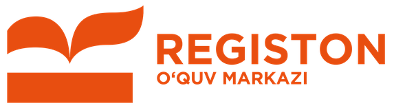

14 ta psixologik savol orqali fikrlash uslubingiz, qadriyatlaringiz va tabiiy moyilligingizni aniqlaymiz — so'ng sizga mos oliy ta'lim yo'nalishi, kirish imtihon fanlari va kasblarni ko'rsatamiz.
2026/2027 o'quv yili rasmiy fanlar majmuasi asosida
Natijani ko'rish uchun ma'lumotlaringizni qoldiring — Registon mutaxassisi bog'lanib, yo'nalish va kirish fanlari bo'yicha bepul maslahat beradi.
Ushbu yo'nalish uchun kerakli fanlar bo'yicha Registondagi kurslarimiz:
© Registon O'quv Markazi · 50+ filial
index.html ichida BOT_TOKEN va CHAT_ID ni kiriting.
Tekshirish uchun manzil oxiriga ?admin=1 qo'shing.Kutilmoqda...